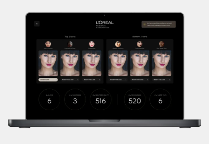

Mood Mirror: let AI decide what you like.

Choosing makeup can be hard. Apparently, the solution is to stop choosing altogether and let a webcam do it for you. Mood Mirror is an AI-powered virtual try-on system that doesn’t just show you what lipstick or hair color looks like — it watches your face while you react and quietly decides what you *actually* like. Smiled a little more? Eyebrows raised? Micro-expression detected? Congratulations, the algorithm has opinions about your taste now.
Here’s how it works: you sit in front of your laptop, turn on the webcam, and start trying on virtual makeup. Behind the scenes, facial-recognition and emotion-detection software tracks things like smiles, surprise, eye widening, and head tilts. Mood Mirror then ranks the looks based on how positively your face reacted — not how you *said* you felt, but how your muscles betrayed you. It’s less “What do you think?” and more “Your face already answered.”
This isn’t really about helping indecisive shoppers (yet). Mood Mirror is currently used inside L’Oréal’s research labs, where volunteers test products while researchers analyze emotional data instead of surveys or polite lies. It’s been recognized at CES and even won an Innovation Award, which makes sense — it perfectly represents where things are headed. First we let AI recommend products. Then we let it observe our reactions. Eventually, it just skips the middle step and tells us what we like before we know it ourselves. If you want the official case study behind this mood-reading mirror, it lives here: roro.io/our-work/loreal